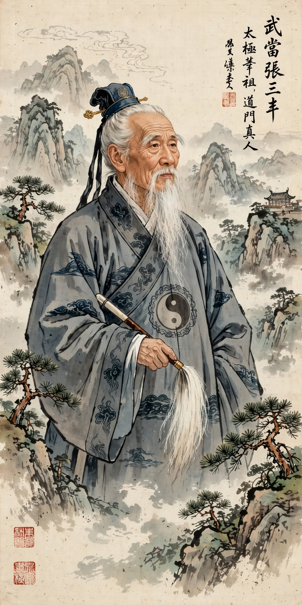

Movimiento lento, respiración y atención. No es solo estirar, es entrenar tu sistema nervioso para que sea más resiliente.

Qué son realmente
Tai Chi y Qi Gong son artes de movimiento consciente. Lento por fuera, muy activo por dentro. Combina 3 cosas a la vez: postura + respiración nasal + atención plena. Por eso mejora tanto la variabilidad cardíaca (HRV), que es tu marcador de resiliencia al estrés.
Beneficios que sí tienen evidencia
- Equilibrio y prevención de caídas: Mejora propriocepción y fuerza de piernas sin impacto.
- Ansiedad y presión arterial: Respiración lenta + movimiento suave baja activación simpática.
- Movilidad articular: Moviliza columna, hombros y caderas sin forzar.
- Sueño y enfoque: 10-15 min diarios mejoran calidad de